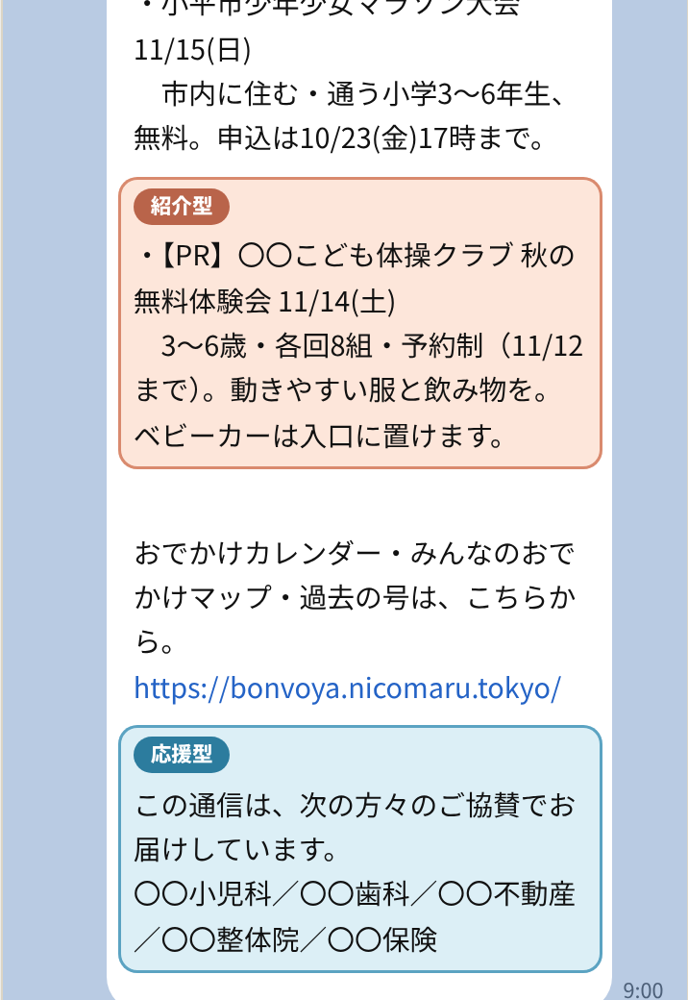
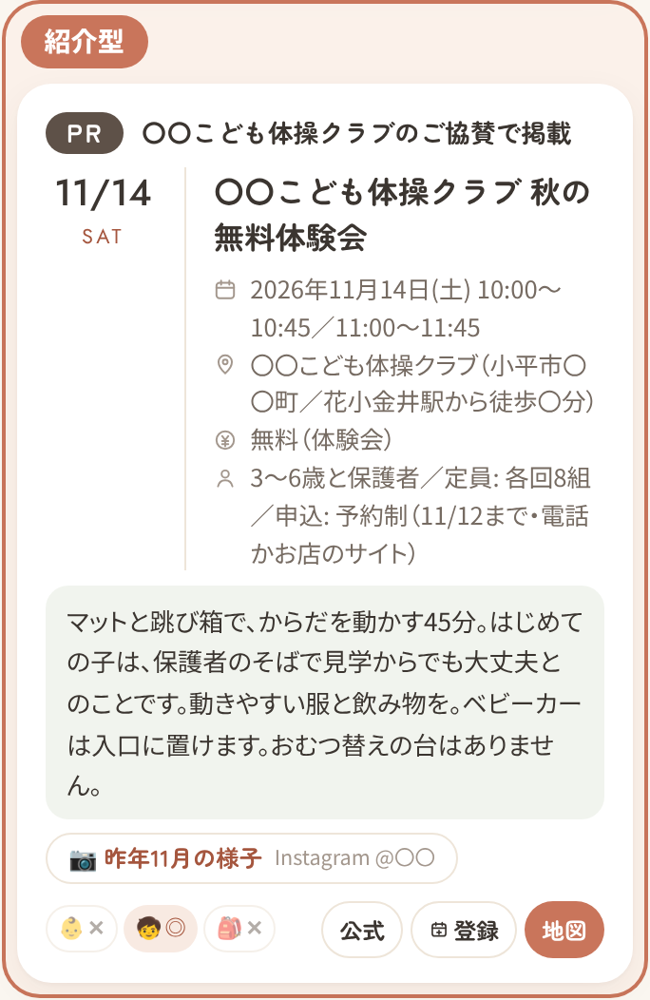
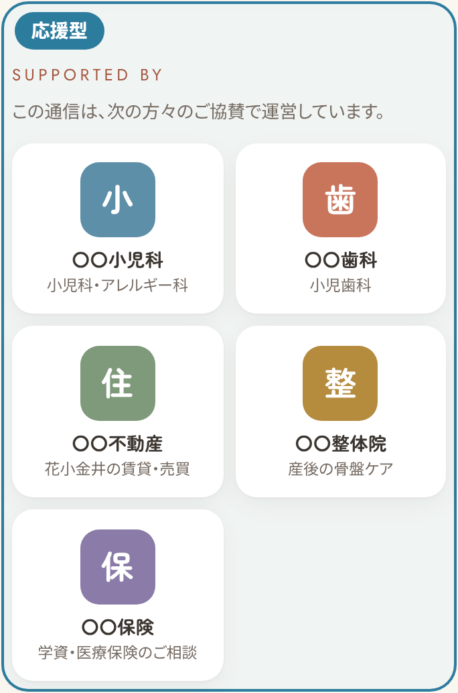

子育て中のご家庭が、毎週「今週末、どこへ行こう」と読む通信です。
お店の体験会や教室を、ほかのおでかけ情報と同じ形でご紹介します。
性別・年代はLINEが推計した割合で、推計できない方を含めた全体に対する数字です。



スマホで見る
チラシ・マップ・翌月のご報告の見本も
1号に1件だけ。同じ業種は、同じ月に1社まで。
向いているもの：習い事の体験会（スイミング・体操・英語・リトミックなど）、摘み取り農園、室内の遊び場、ものづくり体験、写真館の撮影会
5社まで。1業種1社。
向いているもの：小児科・歯科・不動産・保険・整体など。紙面と関係がなくても大丈夫。地域の子育てを応援するお店として、毎週お名前が届きます。
お振込は、原稿をご確認いただいてから。紹介型は、載せたい号の2週間前までにご相談ください（原稿の直しとお振込は、前の週の金曜まで）。
| お支払い | 銀行振込・前払い（紹介型は掲載の前、応援型は1年分をはじめに）。振込手数料はご負担をお願いします。 |
|---|---|
| 請求書 | 経理を担当する「ニコマル」の名義でお送りします。お振込先は、請求書に書いてあります。 |
| 金額・書類 | 消費税の上乗せはありません。インボイスの登録はしていません。領収書はお振込の控えで代えさせてください（必要ならお出しします）。 |
| お取り消し | 紹介型：原稿が固まる前のお取り消しと、催しの中止は全額お返しします（別の号への振り替えも可）。 応援型：途中のご解約による返金はありません。通信を休止・終了したときは、残りを月割りでお返しします。 |
ふだんの掲載は編集の判断で、載るか・いつ載るかはお約束できません。紹介型は、ご希望の号に必ず載ります。
人数は多くありません。そのかわり、届くのは子育て中のご家庭だけ。ポスティングのように、ほかのお宅には配られません。
翌月に、届いた・開いた・押された数をお送りします。「通信を見た」の特典があれば、来店の数も分かります。
はい。申込書の両方に印を付けてください。応援型のお店が、体験会を紹介型で載せることもできます（医療機関は応援型だけです）。
読者は、市内の施設に置いていただいているチラシや、幼稚園で配っていただいているチラシ、地域のおまつりを通じて増えています。
これから、こう広げていきます。
読者が増えても、お申し込みいただいた1年間の料金は変わりません。お名前は、広がった先の読者にも同じように届きます。
掲載料金は2026年11月時点のものです。読者の数にあわせて見直していきます。
件名に「協賛について」とお書きください。掲載申込書と、スマホで見られる掲載イメージは、右のQRのページにあります。（経理・請求書の発行：ニコマル）